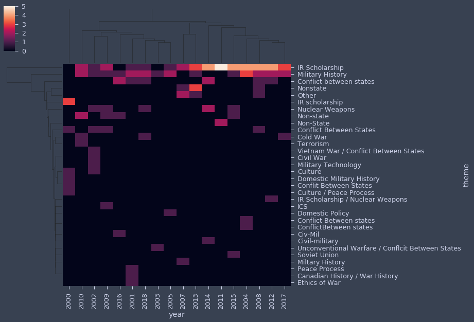
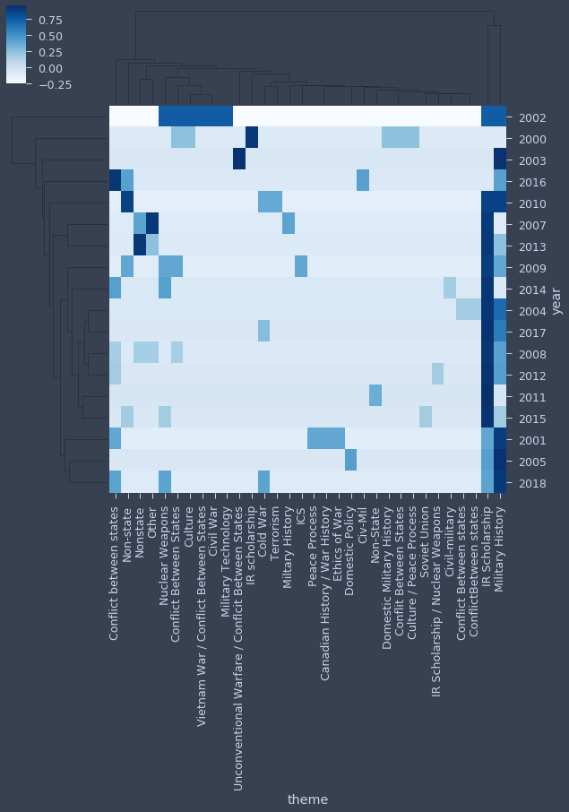
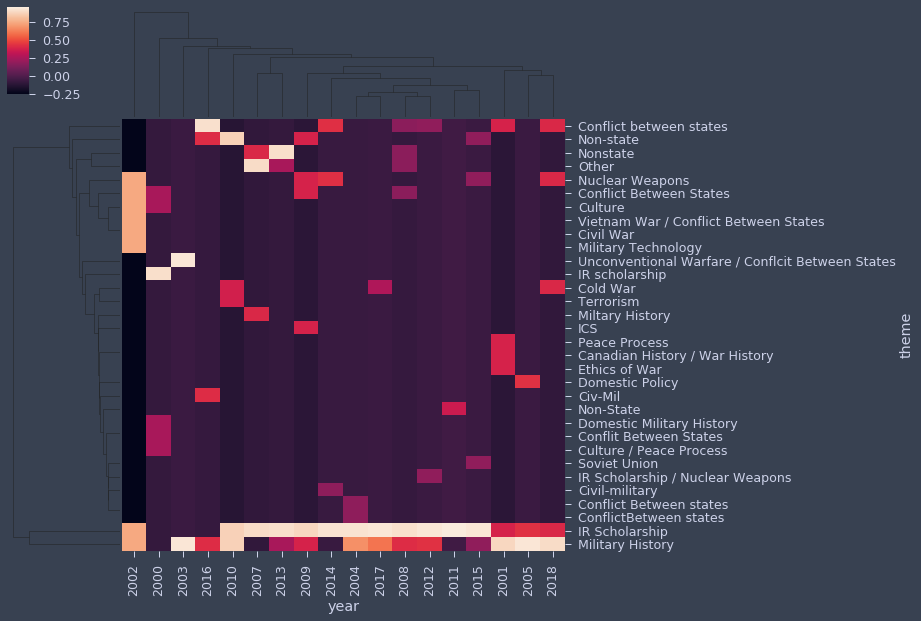

NLP Heatmaps with Seaborn¶
from jupyterthemes import jtplot
import warnings
from imblearn.over_sampling import SMOTE
import seaborn as sns
from sklearn.model_selection import train_test_split
import pandas as pd
import numpy as np
import pandas_profiling
from sklearn.linear_model import LogisticRegression
from sklearn import datasets
from sklearn.preprocessing import StandardScaler
from sklearn import preprocessing
import matplotlib.pyplot as plt
%matplotlib inline
# ignore warnings
warnings.filterwarnings('ignore')
jtplot.style(theme='oceans16', context='notebook',
ticks=True, grid=False, figsize=(10, 9))
df=pd.read_csv('../processed_data/nf_complete.csv')
df.info()
<class 'pandas.core.frame.DataFrame'>
RangeIndex: 126 entries, 0 to 125
Data columns (total 23 columns):
# Column Non-Null Count Dtype
--- ------ -------------- -----
0 Unnamed: 0 126 non-null int64
1 year 126 non-null int64
2 title 126 non-null object
3 abstract 126 non-null object
4 theme 126 non-null object
5 China 126 non-null int64
6 Russia 126 non-null int64
7 War 126 non-null int64
8 President 126 non-null int64
9 US 126 non-null int64
10 Vietnam 126 non-null int64
11 Cold War 126 non-null int64
12 World War 126 non-null int64
13 Vietnam War 126 non-null int64
14 Korean War 126 non-null int64
15 Survey 126 non-null int64
16 Case Study 126 non-null int64
17 Trade 126 non-null int64
18 Humanitarian 126 non-null int64
19 fixed_effects 126 non-null int64
20 instrumental_variable 126 non-null int64
21 regression 126 non-null int64
22 experimental 126 non-null int64
dtypes: int64(20), object(3)
memory usage: 22.8+ KB
import plotly_express as ple
ple.histogram(df.sort_values('year').groupby(['year','theme'])['Cold War'].sum().reset_index(), x="year", y="Cold War", histfunc="sum", color="theme")
# ple.lidifferences(dfm_regional.sort_values('year').groupby(['year','theme'])['Cold War'].sum().reset_index(),
# x='year',
# y='Cold War',
# line_group='theme',
# color='theme'
# )
# Create the crosstab DataFrame
pd_crosstab = pd.crosstab(df["theme"], df["year"])
# Plot a heatmap of the table with no color bar and using the BuGn palette
sns.heatmap(pd_crosstab, cbar=False, cmap="GnBu", linewidths=0.3)
# Rotate tick marks for visibility
plt.yticks(rotation=0)
plt.xticks(rotation=90)
plt.tight_layout()
#plt.savefig('./img/theme_heat_1.png', bbox_inches='tight', dpi=500)
#Show the plot
plt.show()
plt.clf()

<Figure size 720x648 with 0 Axes>
sns.clustermap(pd_crosstab, cmap='Greens', robust=True)
# plot using a color palette
#sns.heatmap(df, cmap="YlGnBu")
#sns.heatmap(df, cmap="Blues")
#sns.heatmap(df, cmap="BuPu")
#sns.heatmap(df, cmap="Greens")
<seaborn.matrix.ClusterGrid at 0x7f978c07a470>
# Import seaborn library
import seaborn as sns
# Get correlation matrix of the meat DataFrame
corr_meat = df.corr(method='pearson')
# Customize the heatmap of the corr_meat correlation matrix and rotate the x-axis labels
fig = sns.clustermap(pd_crosstab,
row_cluster=True,
col_cluster=True,
figsize=(10, 10))
plt.setp(fig.ax_heatmap.xaxis.get_majorticklabels(), rotation=90)
plt.setp(fig.ax_heatmap.yaxis.get_majorticklabels(), rotation=0)
plt.show()

data_normalized = pd_crosstab
# Standardize the mean and variance within a stat, so different stats can be comparable
# (This is the same as changing all the columns to Z-scores)
data_normalized = (data_normalized - data_normalized.mean())/data_normalized.var()
# Normalize these values to range from -1 to 1
data_normalized = (data_normalized)/(data_normalized.max() - data_normalized.min())
data_normalized = data_normalized.T
# Can use a semicolon after the command to suppress output of the row_dendrogram and col_dendrogram.
sns.clustermap(data_normalized, cmap='Blues');

data_normalized = pd_crosstab
# Standardize the mean and variance within a stat, so different stats can be comparable
# (This is the same as changing all the columns to Z-scores)
data_normalized = (data_normalized - data_normalized.mean())/data_normalized.var()
# Normalize these values to range from -1 to 1
data_normalized = (data_normalized)/(data_normalized.max() - data_normalized.min())
#data_normalized = data_normalized.T
# Can use a semicolon after the command to suppress output of the row_dendrogram and col_dendrogram.
sns.clustermap(data_normalized, cmap='BuPu');

import matplotlib.pyplot as plt
sns.clustermap(data_normalized);
fig = plt.gcf()
fig.savefig('clusteredheatmap_bbox_tight.png', bbox_inches='tight')

tidy_df = pd.melt(df.reset_index(), id_vars='index')
df.T.head()
| 0 | 1 | 2 | 3 | 4 | 5 | 6 | 7 | 8 | 9 | ... | 116 | 117 | 118 | 119 | 120 | 121 | 122 | 123 | 124 | 125 | |
|---|---|---|---|---|---|---|---|---|---|---|---|---|---|---|---|---|---|---|---|---|---|
| Unnamed: 0 | 0 | 1 | 2 | 3 | 4 | 5 | 6 | 7 | 14 | 13 | ... | 128 | 130 | 123 | 125 | 131 | 132 | 133 | 134 | 135 | 136 |
| year | 2000 | 2000 | 2000 | 2000 | 2000 | 2000 | 2000 | 2000 | 2001 | 2001 | ... | 2017 | 2017 | 2017 | 2017 | 2018 | 2018 | 2018 | 2018 | 2018 | 2018 |
| title | "Institutions at the Domestic/International Ne... | Born to Lose and Doomed to Survive: State Deat... | The significance of “allegiance” in internatio... | The significance of “allegiance” in internatio... | Truth-Telling and Mythmaking in Post-Soviet Ru... | Building a Cape Fear Metropolis: Fort Bragg, F... | The Glories and the Sadness: Shaping the natio... | What leads longstanding adversaries to engage ... | A School for the Nation: Military Institution... | The 'American Century' Army: The Origins of t... | ... | Fully Committed? Religiously Committed State P... | Straddling the Threshold of Two Worlds: Soldie... | U.S. Army’s Investigation and Adjudication of ... | Grand Strategic Crucibles: The Lasting Effects... | Trust in International Politics: The Role of L... | Planning for the Short Haul: Trade Among Belli... | Clinging to the Anti-Imperial Mantle: The Repu... | The New Navy's Pacific Wars: Peripheral Confl... | Stop or I'll Shoot, Comply and I Won't: The Di... | Unexpected Humanitarians: Albania, the U.S. Mi... |
| abstract | Civil-military relations are frequently studie... | Under what conditions do states die, or exit t... | My dissertation employs original and secondary... | \nThis study revises prevailing interpretation... | Can distorted and pernicious ideas about histo... | My dissertation examines the cultural and econ... | In my dissertation I compare the ways in whic... | This dissertation develops a socio-psychoanal... | Beginning in Europe in the latter half of the ... | This dissertation covers the period 1949-1959 ... | ... | This dissertation argues that the higher the l... | This dissertation explores how American soldie... | This dissertation examines the U.S. Army’s res... | When and how do military interventions shape g... | In my dissertation, I focus on how leader rela... | In times of war, why do belligerents continue ... | My dissertation project, Clinging to the Anti-... | Using a transnational methodology and sources ... | There is a dilemma at the heart of coercion. S... | Using archives and oral history, this disserta... |
| theme | IR scholarship | IR scholarship | IR scholarship | Conflit Between States | Conflict Between States | Domestic Military History | Culture | Culture / Peace Process | Military History | Military History | ... | IR Scholarship | Military History | Military History | IR Scholarship | Nuclear Weapons | Conflict between states | Cold War | Military History | IR Scholarship | Military History |
5 rows × 126 columns